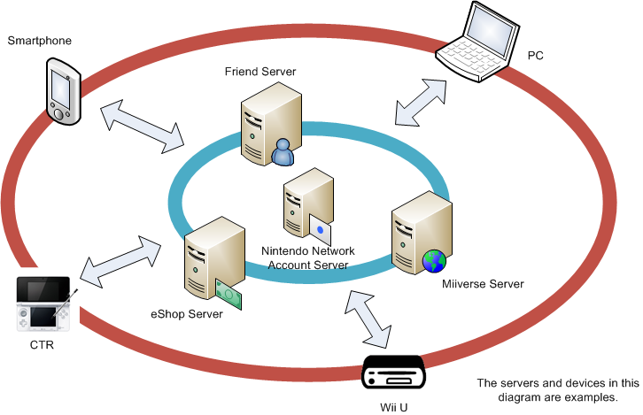

The CTR account system is provided through linking between the system account system provided by the CTR system, and the Nintendo Network account system, which is universal across platforms and devices.
2.1. System Accounts
This is the user account created within the CTR system.
2.2. Nintendo Network Accounts
Users must have a Nintendo Network account to use any network service that Nintendo offers. Users can access these services from off-device platforms such as PCs and smartphones, and they will be able to continue to access them on future Nintendo platforms.
The Nintendo system account offers the following primitive features.
- Assigns a globally unique ID.
- Manages basic user information.
- Ensures basic legal clearance.
- Authenticates and bans users on relevant services.
Also, using a Nintendo network account provides the following.
- E-Commerce
- Miiverse
Plans are to offer these network services across platforms.

2.2.1. Creating a Nintendo Network Account
A user must perform the following tasks to create a Nintendo Network account.
2.2.1.1. Entering User Information
Users must enter the following information.
- Account ID
- Password
- Email Address
- Date of Birth
- Country of Residence
- Region of Residence (optional outside Canada)
- Time Zone
- Gender
When creating an account on the CTR, the country of residence is set automatically to the value in the system settings of the CTR system. The Mii used by the CTR system account (Personal Mii) is also configured in the Nintendo Network account.
2.2.1.2. EULA Agreement
Users must accept the latest Nintendo End-User License Agreement (EULA) to create a Nintendo Network account.
2.2.1.3. COPPA Compliance
In the United States, a law called the Children's Online Privacy Protection Act (COPPA) requires consent from the parent or guardian for collection and use of personal information from children under the age of 13. Canada has a nearly identical law.
When a child under the age of 13 in the U.S. or Canada creates a Nintendo Network account, the system must perform a procedure to get consent from the parent or guardian and not create the account until that consent has been obtained.
2.2.2. Deleting Nintendo Network Accounts
There is a procedure in place for users to delete their Nintendo Network accounts. A deleted account ID is placed on a blacklist and can never be used again. On the CTR, when a Nintendo Network account is deleted, the system account is also deleted (although the system account is re-created). All data associated with friend accounts such as friend information and ranking information is not deleted, however, because friend accounts are not deleted when network accounts are.
A Nintendo Network account is not deleted when the system is initialized (although friend accounts are). As a result, the same Nintendo Network account can be used for associating accounts and using accounts from other devices, even after initializing.
2.2.3. Editing Information Registered to Nintendo Network Accounts
Users can modify some of the information that they register in their Nintendo Network accounts. On the CTR, this is performed in the System Settings' Nintendo Network ID Settings application.
2.2.4. Separate Specification for Registration Information
2.2.4.1. Account ID
Users enter and register this ID when creating a Nintendo Network account.
The account ID consists of a string of 6 to 16 characters, including alphanumeric characters and the period (.), hyphen (-). and underscore (_). An ID may not start or end with a symbol. It is also not allowed to use two symbols in a row.
Although letters are displayed in uppercase or lowercase as entered by the user, matching for authentication (such as for login credentials) is case-insensitive. For example, if the account ID is "nintendo", a user could still log in by entering "NINTENDO." Consequently, if the account ID "nintendo" has already been created, it is not possible to create the account ID "NINTENDO."
A profanity check is performed when creating account IDs. If an ID is determined to contain profanity, it cannot be registered. Modifying the profanity list after an ID has been registered will not affect that ID.
Although users cannot change their account IDs at will, Nintendo may change IDs for operational reasons. After an account ID has been modified or deleted, the original ID can never be used again.
2.2.4.2. Principal ID
A 32-bit value automatically assigned to a Nintendo Network account. This ID is guaranteed to be unique to each Nintendo Network account. Once assigned, it never changes.
In addition, it is never the same as the friend account's principal ID.
2.2.4.3. Password
The password is a string of 6 to 16 characters that is set by the user. This string must include a combination of at least two kinds of characters, taken from uppercase alphabetic characters, lowercase alphabetic characters, numbers, and symbols (excluding the space).
The string cannot be the same as the account ID, and the same character cannot appear three or more times in sequence.
This value can be changed by the user.
2.2.4.4. Email Address
The user email address can be a string of up to 256 characters. It can contain uppercase letters, lowercase letters, numbers, and the following symbols: !#$%&'*+-./=?@^_`{|}~ It cannot contain spaces.
The system performs a simple format check when registering the email address. If the email string is deemed to be invalid at this stage, it cannot be registered. If the format check passes, the system sends a confirmation email to the email address to validate it.
A Nintendo Network account can be enabled even if the email address has not been validated. However, some functions are restricted until the email address can be validated.
For users under the age of 13, instead of their own email address, enter the address of the parent or guardian.
Users cannot specify email addresses that end with "@wii.com."
This value can be changed by the user.
2.2.4.5. Date of Birth
Specify any day between January 1, 1900 and December 31 of the year before registration. This date is used to determine the user's age.
Although users cannot change this value themselves, Nintendo may change it for operational reasons.
Nintendo systems calculate the age of the user based on UTC+12 time, regardless of their country or region of residence. For users in Japan, age is calculated based on 9 P.M. of the day before the date of birth.
2.2.4.6. Country of Residence
The country where the user resides. This cannot be set to a country where Nintendo Network services are not available.
After it has been set, users cannot change the country of residence, and it is never changed for operational reasons either.
2.2.4.7. Region of Residence
The region where the user lives. Depending on the country, this region can be a state, province, prefecture, or similar region. This field is optional unless the country of residence is Canada.
This value can be changed by the user.
2.2.4.8. Time Zone
The user selects a time zone from those in their country of residence. The user can change this value at any time.
2.2.4.9. Time Difference
This is the offset from Coordinated Universal Time based on the time zone setting. This setting may change depending on the time of year, because it takes daylight saving time and summer time into account. Users cannot change this value directly.
2.2.4.10. Gender
The user's gender. Although the user must choose either "male" or "female," they can then change this value at any time.
2.2.4.11. Mii
The user's Mii. This value can be changed by the user.
2.2.5. Friend Accounts
Friend accounts are used to manage friend information, matchmaking information, and ranking information. The accounts are managed by the Friend Presence library. Friend lists and NEX data such as matchmaking and ranking information are associated with the friend accounts. Only a system initialization can delete these accounts. No user action can do so.